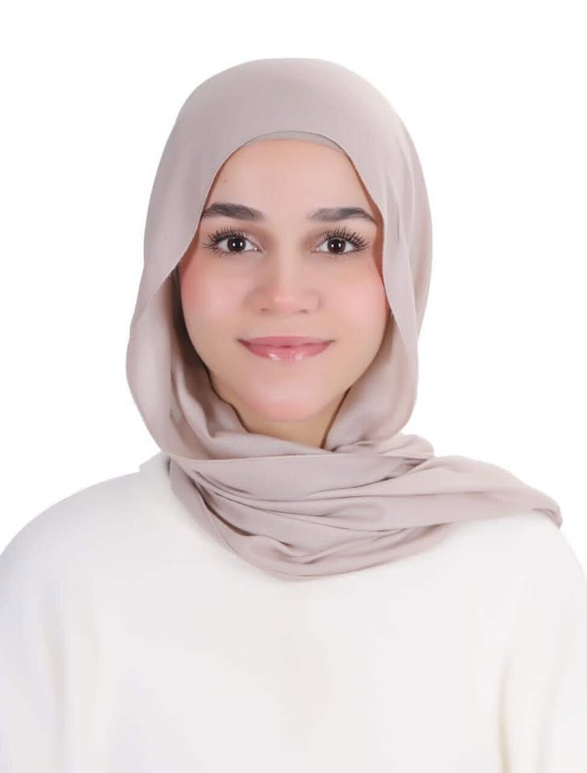

مريم معتز حسين
Mariam Motaz Hussain
طالبة · الصف العاشر
مريم معتز حسين، طالبة في الصف التاسع. تاريخ الميلاد 25/7/2010 وتبلغ من العمر 15 سنة. تهتم بالمشاركة في الأنشطة المدرسية والعمل التطوعي وتسعى لاكتساب الخبرات والمساهمة في خدمة المجتمع.
الخبرات والتطوع
- التطوع في متحف الأطفال والمشاركة في بعض الأنشطة.
- المشاركة في إفطار الأيتام ضمن الأعمال التطوعية.
- العمل ضمن فريق والمساعدة في ترتيب وتنظيم الأنشطة.
المهارات
العمل الجماعي
القدرة على العمل ضمن فريق والتعاون مع الآخرين.
التنظيم
تنظيم وترتيب الأنشطة والمساعدة في إدارتها.
حب التطوع
المشاركة في الأعمال التطوعية وخدمة المجتمع.
طموحي:
تطوير مهاراتي والمشاركة في المزيد من الأنشطة التطوعية التي تساهم في خدمة المجتمع.